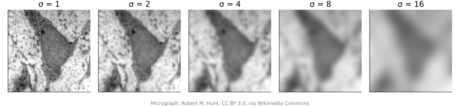
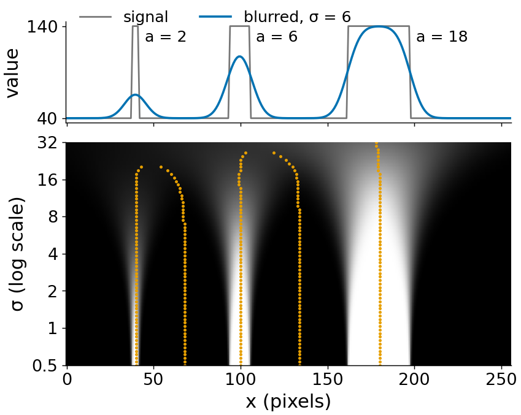
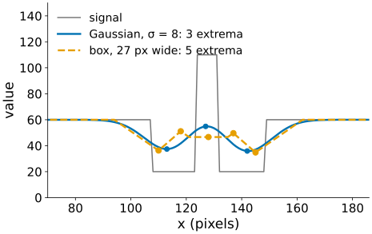
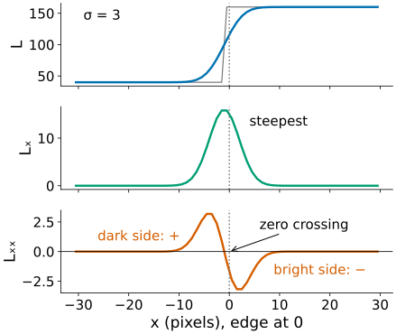
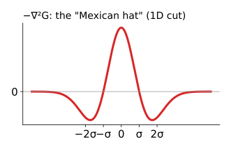
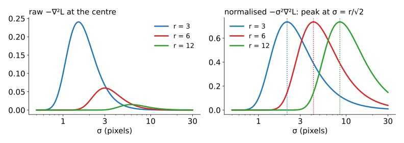
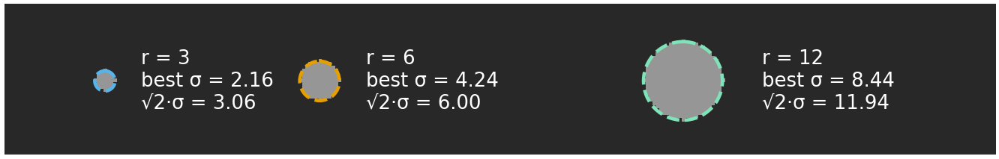
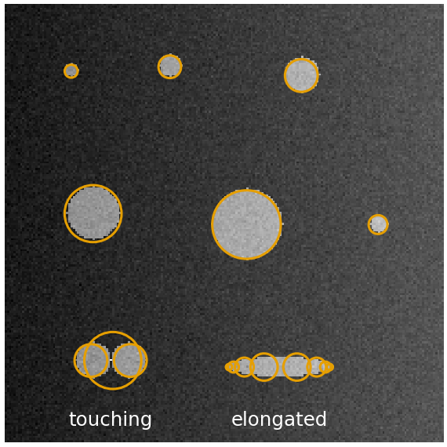
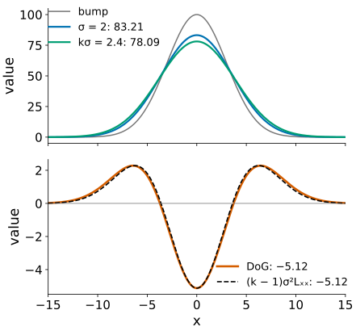
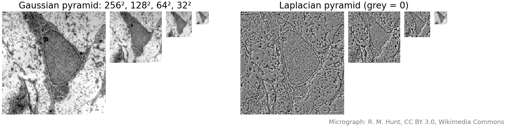

Last unit: one σ for the whole image. But a nucleus is a blob at σ ≈ 10 pixels and texture at σ ≈ 1. Today: look at all scales at once.
Scale space: the stack of all blurred versions of an image.
Why the Gaussian: blurring removes structure, never invents it.
Second derivatives: zero crossings mark edges; the Laplacian of Gaussian finds blobs.
Scale normalisation (× σ²): each blob picks its own scale, and the scale gives its size (radius ≈ √2·σ).
The difference of Gaussians and image pyramids: the cheap versions.
Slides titled The math give the formulas and proofs; the ideas are complete without them.
Structures exist at a scale

At σ = 1 we see texture and membranes; at σ = 4 the granules and the nuclear envelope; at σ = 16 only the nucleus and the cell as a whole.
There is no single “right” σ for a whole image: each structure has its own.
A leaf vein is an edge pair at a fine scale and a line at a coarser one.
Scale space
Compute the blurred image L(x, y; \sigma) = G_\sigma * I for every σ: a stack, with σ as a third axis.
For a 1D signal the stack is a 2D picture: position x across, σ up (on a log scale, so each doubling of σ gets the same height).
Follow a feature (a bump, an edge) as σ grows: it traces a curve in this picture, and the curve ends where the feature merges into a coarser one.
Fine noise lives only at the bottom (small σ); a large structure survives up to large σ.

The demo shows the stack of L, of the slope and of the curvature, with the features traced.
Why the Gaussian?
What we want from blurring: as σ grows, structure should only disappear, never appear.
In 1D, Gaussian blurring never creates a new extremum (bump or dip) or a new zero crossing as σ grows. Curves in scale space end; they never start.
Blurring by σ₁ and then by σ₂ is one blur by \sqrt{\sigma_1^2 + \sigma_2^2}: the scales form a chain, so any level can be computed from a finer one.
Among smoothing kernels, the Gaussian is the only one with both properties (Babaud et al. 1986; Lindeberg).
A box kernel of the same width can create new bumps: try it in the demo.

The math: scale space as diffusion
L = G_\sigma * I solves the heat equation\partial_t L = \tfrac12\nabla^2 L with “time” t = \sigma^2 and L(\cdot, 0) = I: blurring is heat flowing from bright to dark.
Semigroup: in Fourier space a Gaussian is a Gaussian, \widehat{G_\sigma}(\omega) = e^{-\sigma^2\omega^2/2}, so
Causality (Koenderink 1984): by the heat equation, a local maximum can only decrease and a minimum only increase as t grows, so in 1D extrema can merge and vanish but not be created.
Honest note: in 2D, new local extrema can appear in rare configurations; the exact statement is about level sets (a weaker causality). It does not matter in practice.
Try it: a 1D scale space
Second derivatives and zero crossings
The Laplacian of Gaussian (LoG) \nabla^2 L = L_{xx} + L_{yy} (the Laplacian from the filtering unit, applied to the blurred image):
At an edge it is positive on the dark side and negative on the bright side: it crosses zero exactly at the edge, where the slope is steepest.
Zero crossings of the LoG are edges (Marr & Hildreth, 1980). They always form closed contours.
Compared with Canny: no thresholds on a ridge and no thinning needed, but many weak spurious contours, and corners are badly rounded. Canny won for edges.
The LoG is much better at something else: blobs.

Blobs: the Laplacian of Gaussian
A bright blob gives a strongly negative LoG at its centre (brightness curves down in every direction).
We use -\nabla^2 L, so bright blobs are positive. As a kernel, -\nabla^2 G_\sigma is the “Mexican hat”: a positive centre and a negative ring.
The response is strongest when the hat’s centre fits the blob: too small a σ sees only the flat inside, too large a σ averages the blob away.
So the best σ tells us the size of the blob.

Why scale-normalise?

Blurring flattens the image, so raw derivatives shrink as σ grows: the raw LoG always prefers small σ, and a large blob loses to a small one.
Multiply by σ² (σ per derivative): this measures distances in units of σ, making scales comparable.
Now each blob’s response, plotted against σ, has a maximum at its own scale: automatic scale selection (Lindeberg).
Size from scale
For a disc of radius r, the normalised LoG at its centre peaks at \sigma = r/\sqrt2.
So a detection at scale σ is drawn as a circle of radius \sqrt2\,\sigma.
Example: a blob detected at σ = 5 pixels has radius \sqrt2 \cdot 5 = 7.1 pixels; at 0.2 µm per pixel its diameter is 2 \cdot 7.1 \cdot 0.2 = 2.8 µm.
A Gaussian spot of width s peaks at \sigma = s.
1D: a box of half-width a peaks at \sigma = a (the demo’s three bumps: σ = 2, 6.14 and 17.67 on its grid of scales, for a = 2, 6 and 18).

The math: normalisation and blob size
1D box of half-width a, height 1: L(x) = \Phi\!\big(\tfrac{x + a}{\sigma}\big) - \Phi\!\big(\tfrac{x - a}{\sigma}\big), so \sigma^2 L_{xx}(0) = -2\,\tfrac{a}{\sigma}\,\varphi\!\big(\tfrac{a}{\sigma}\big) \propto -\tfrac{a}{\sigma}e^{-a^2/2\sigma^2}, maximal in size where \tfrac{d}{du}\big(u e^{-u^2/2}\big) = 0: u = a/\sigma = 1.
2D disc of radius r: by the divergence theorem, \nabla^2 L(0) = \oint \nabla G_\sigma\cdot\mathbf n\,ds over the circle, so \sigma^2\nabla^2 L(0) = -\frac{r^2}{\sigma^2}\,e^{-r^2/2\sigma^2},\qquad \text{maximal in size at } r^2/\sigma^2 = 2,\; r = \sqrt2\,\sigma.
Gaussian blob of width s: \sigma^2\nabla^2 L(0) \propto -\sigma^2/(s^2 + \sigma^2)^2, maximal at \sigma = s.
Why exactly σ²: for derivatives of order m, normalise by \sigma^{\gamma m}; \gamma = 1 makes the response of a scaled copy of the image identical at the scaled σ (scale invariance). Other γ are used for ridges and edges (Lindeberg 1998); stated, not derived here.
Detection: maxima in (x, y, \sigma)
Compute -\sigma^2\nabla^2 L for a range of σ (e.g. 16 levels from 1 to 16) and look for local maxima in 3D: larger than all 26 neighbours (8 in the same scale, 9 above, 9 below), and above a threshold. Draw each as a circle of radius \sqrt2\,\sigma.
What goes wrong:
Touching blobs: one big blob or two small ones, depending on the scales.
Elongated blobs: respond at their width, not their length; several small detections along them.
Edges give weak responses along their sides (about a third of a blob’s): a threshold, or the Hessian test of the next unit, rejects them.
Uneven background: the LoG ignores constant and linear brightness changes, an advantage over thresholding.

Try it: blobs over scales
Difference of Gaussians
Subtract two blurs: \text{DoG} = G_{k\sigma} * I - G_\sigma * I (with k = 1.2 to 1.6).
It looks like (minus) a Mexican hat: a narrow positive centre minus a wider bump.
The blurs are needed anyway for scale space, so neighbouring levels give the DoG for free.
Example (1D, a Gaussian bump of width 3 and height 100, σ = 2, k = 1.2): at the centre the two blurs are 83.21 and 78.09, DoG = −5.12; (k - 1)\sigma^2 L_{xx} = 0.2 \cdot 4 \cdot (-6.40) = -5.12.
Pointer: scale-invariant keypoints (SIFT, Lowe 2004) are DoG extrema in a pyramid, plus an orientation from the gradient.

The math: DoG ≈ LoG
The Gaussian satisfies the heat equation in the form \partial_\sigma G_\sigma = \sigma\,\nabla^2 G_\sigma (check by differentiating \frac{1}{2\pi\sigma^2}e^{-r^2/2\sigma^2}). A finite difference in σ:
The factor σ² appears by itself: the DoG is the normalised LoG, up to the constant k - 1.
The error is of order (k - 1)^2: for k = 1.2 a few percent, for k = 1.6 (Marr’s choice) noticeably more, but the shape is the same.
Image pyramids
After blurring by σ there is no detail finer than about σ: we can keep fewer pixels.
Gaussian pyramid: blur, keep every second pixel in each direction, repeat. Each level has ¼ of the pixels of the one before: total 1 + \tfrac14 + \tfrac1{16} + \dots = \tfrac43 of the image.
Blur before downsampling, or fine detail aliases into false coarse patterns (recall the Fourier unit).
Laplacian pyramid: each level minus the (upsampled) next level, a DoG; the coarsest level is kept as it is. Adding the levels back up gives the image exactly.
Uses: coarse-to-fine search (registration, active shape models), fast large filters, image blending, mipmaps in computer graphics.

The math: the Laplacian pyramid is exact
Let g_0 = I, g_{i+1} = \text{down}(G * g_i) and l_i = g_i - \text{up}(g_{i+1}) for i < n, l_n = g_n.
Reconstruction from the top: g_n = l_n, and g_i = l_i + \text{up}(g_{i+1}) for i = n-1, \dots, 0.
This is a telescoping sum: whatever \text{up} and \text{down} are, g_0 = l_0 + \text{up}(l_1 + \text{up}(l_2 + \dots)) holds exactly, because each l_i was defined as the difference.
The pyramid has \tfrac43 as many numbers as the image, but most l_i values are near zero: the basis of early image compression (Burt & Adelson 1983).
Where this leads
Hessian (next unit): the LoG is the trace of the Hessian; its two eigenvalues tell a blob from a ridge, and reject edges.
Wavelets (transforms elective): the Mexican hat is a wavelet; à trous spot detection.
Integral images (detection elective): box filters as fast approximations of Gaussians and DoG.
Spot detection in fluorescence images: LoG/DoG at a known spot size, then local maxima.
Summary
Scale space: all blurred versions L(x, y; \sigma) at once. The Gaussian is the kernel that never creates structure; scales chain: \sigma^2 adds.
LoG: zero crossings = edges (Marr–Hildreth); -\nabla^2 L = blob detector (Mexican hat).
Normalise by σ², then each blob’s response peaks at its own σ; radius ≈ √2·σ.
Detect blobs as maxima in (x, y, σ); watch touching, elongated blobs and edges.
DoG ≈ (k − 1)·normalised LoG; pyramids: 4/3 of the pixels, Laplacian pyramid exactly invertible.